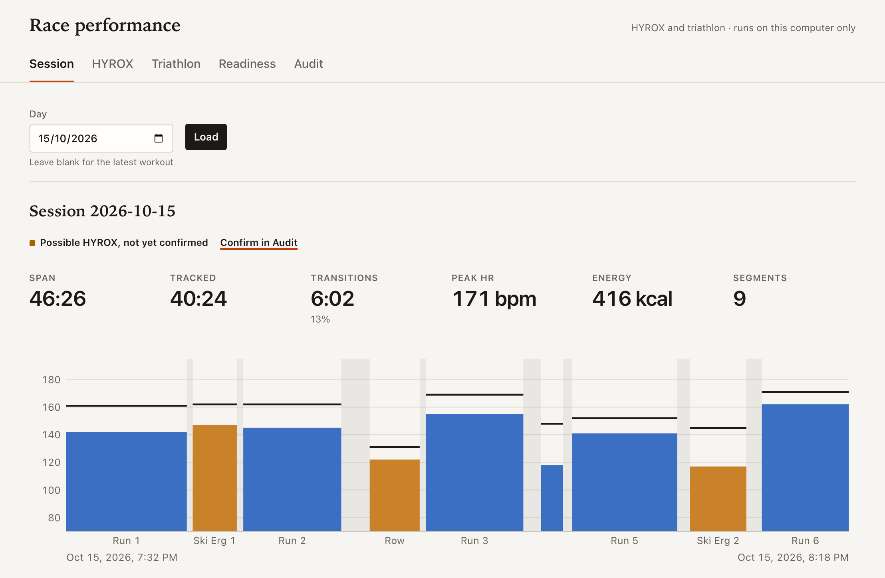

Personal analytics
Your history, with the gaps made visible.
Downloads since first publication, through . Stars checked . Refreshed daily.
Downloads may include automated installs.
WHOOP MCP server · Read-only health data
Your recovery, sleep and strain. In your AI assistant.
Open-source software for your existing WHOOP. Not a device.
get_recovery_collection
Recovery scores, HRV and resting heart rate, matched to the right day.
get_sleep_debt
Sleep stages, naps and nightly deficits, kept separate from WHOOP's standing debt.
get_workout_collection
Daily strain and every workout, with weekly summaries and trends.
get_baselines
Personal baselines from your own history. Compared with you, not with a population.
16 tools that read and never write. Nothing is written back to WHOOP. OAuth with PKCE. Tokens stay on the server host with 0600 permissions.
Works with the assistant you already use, over stdio or Streamable HTTP.2
npx -y whoop-ai-mcp@latest setupNode.js 20+ with npm. No global installation needed.
Client setup16 read-only tools · 9 race tools · 4 resources · 5 prompts in standard mode
Your history, with the gaps made visible.
Share summaries. Hold back the records.
All 16 read-only tools, including raw records and the latest observations.
Tools, resources and prompts. Drop it into Claude Desktop or host your own.
Usage counts, only with your permission.
Setup asks before sending usage counts. Declining does not affect WHOOP access.
Personal analytics
Sixteen read-only tools cover raw records, current health context and personal statistics. Missing data is labeled, never filled in.
get_baselines
Compares HRV, resting heart rate, sleep and recovery with your own history. Reports insufficient data when history is too short, rather than guessing a normal range.
get_sleep_debt
Separates observed nightly deficits from WHOOP's standing debt. Uses scored asleep stages and accounts for naps.
get_today
Matches recovery with the current cycle and primary sleep. Pending or invalid sleep never borrows an older score. Missing stays distinct from zero.
WHOOP_MCP_PRIVACY_MODE=aggregate
Five summary and analytics tools. No record arrays, identity fields or exact activity timestamps. Aggregates are still sensitive data.1
Check your configuration offline with whoop-ai-mcp doctor --json. · Changelog
New in 1.0 · HYROX and triathlon
Nine race tools rebuild HYROX sims from back-to-back WHOOP workouts, track triathlon balance and open a local dashboard. Every number shows where it came from.

get_hyrox_session_report
Stitches runs and ergs into one session with transitions, time in zone and rule-based insights. A possible sim stays unconfirmed until you confirm it.
get_race_readiness
Recovery, training form, specificity, sleep debt and taper, each with its value, method, window and records used. No opaque score.
audit_performance_data · verify_claim
Implausible paces, overlaps and indoor distances are flagged, never excluded automatically. verify_claim recomputes a number your assistant told you.
open_performance_dashboard
Session, HYROX, triathlon, readiness and audit views on 127.0.0.1. Token-protected, no third-party assets, and it stops after 30 idle minutes.
Race results and workout corrections are saved to local files with an audit log, never to WHOOP. Available when the server runs locally. · Race tools
Consent-based telemetry
Setup asks before sharing command, tool or template usage. Existing clients are never silently opted in.
Desktop setup stores your choice in its config. Pass --telemetry=off to decline explicitly. No installation ID is created.
Events carry versions, an allowlisted name, its kind and outcome. No arguments, results, chat text or identifiers.
DO_NOT_TRACK=1 and aggregate mode suppress sending even after opt-in. 500 ms deadline, no retry queue.
The collector stores daily counts, not raw events. Users and installations are not measured.
Consent is not an anonymity guarantee: networks can see IP addresses and arrival times. This page loads no telemetry client. · Consent and retention
Setup
Choose Node.js or the native Rust binary, then pick your assistant. Both require WHOOP Developer App credentials. Optional telemetry defaults to No.
Run setup
npx -y whoop-ai-mcp@latest setup --client=claude-desktopMerges the server into Claude Desktop with a backup. Fully quit and reopen Desktop, then authorize WHOOP on first start.
http://localhost:3000/callback